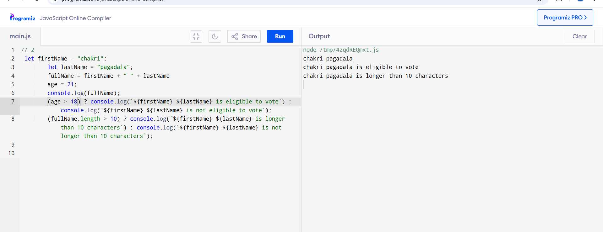

Question 1:
Write a program that asks the user for two numbers. Perform the following:
Add, subtract, multiply, and divide the two numbers using arithmetic operators.
Compare the two numbers using comparison operators (>, <,==) and log the result.
Use an assignment operator (+=) to add 5 to the first number and log the updated value.
Question 2:
Create a program that accepts the user's first name, last name, and age as inputs. The program should:
Concatenate the first and last name to display the full name.
Use a ternary operator to check if the user is 18 or older and display a message indicating whether they are
eligible to vote.
Use a string operator to calculate the length of the full name and log whether the name is longer than 10
characters.

Question 3:
Build a program that takes a number from the user and:
Performs both modulus and exponentiation on the number (e.g., number % 2, number ** 2) and displays the results.
Use a comparison operator to check if the number is greater than 50, and log "Greater than 50" or "Less than or
equal to 50."
Use a ternary operator to check if the number is odd or even.
Question 4:
Write a program that takes three numbers from the user. The program should:
Add the first two numbers and display the result.
Compare the sum of the first two numbers with the third number using comparison operators.
Use a logical operator (&&) to check if the sum of the first two numbers is greater than 50 and the third number
is less than 100, and log the result.
Question 5:
Create a program where the user inputs two strings (e.g., a first name and a last name) and a number. The
program should:
Concatenate the strings and display the full name.
Use the typeof operator to check if the number is of type number and display the result.
Use assignment operators to increment the number by 10 and log the new value.
Question 6:
Write a program that simulates a shopping cart:
Ask the user to input the total amount.
Use a ternary operator to apply a 15% discount if the total is over $150; otherwise, apply no discount.
Use assignment operators to update the total amount after the discount and log the final price.
Question 7:
Create a program that accepts a sentence from the user and:
Use string operators to reverse the sentence.
Check if the reversed sentence is longer than 15 characters using a comparison operator.
Use a logical operator (||) to log a message if either the original or reversed sentence has more than 20
characters.
Question 8:
Write a program that accepts two numbers from the user. The program should:
Perform a bitwise &, |, and ^ operation on the numbers and display the results.
Shift the bits of the first number two places to the left and display the result.
Compare the original and shifted number using comparison operators and log the results.

Question 9:
Create a program that evaluates a person's eligibility for a loan. The program should:
Ask for the person's age, salary, and credit score.
Use logical operators (&&, ||) to check if the person is eligible for a loan (e.g., age ≥ 21, salary > $30,000, or credit score > 650).
Log whether the person is approved or denied based on these conditions.
Question 10:
Write a program that calculates the total score of a student based on three input scores:
Add the scores using arithmetic operators.
Use a ternary operator to check if the total score is 60 or above to display "Passed" or "Failed."
Use assignment operators to add bonus points (5) to the total score if it's below 60, then recheck if the student has passed or failed after applying the bonus.